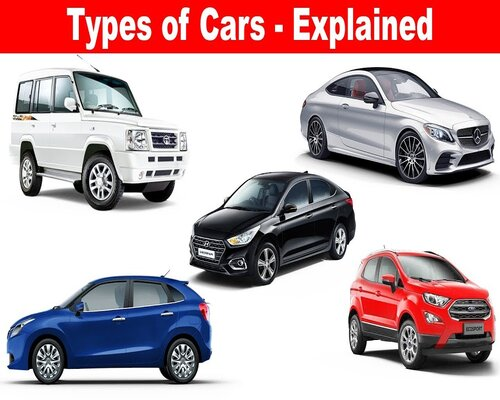

Cars
Cars are the four-wheeler automobiles that are run for an individual or a small group of people, such as a family.
It is a convenience in the modern world especially in places where the public transport is not easily available or is not very reliable.
You can travel from your door to your destination in a state of comfort. With young children and pets, a car is a preferable mode of transport.

Depending on the utility of the car one can choose from the following types:
- Micro cars are very small cars, meant for an individual or a couple
- Hatchbacks are slightly larger but have a rear end that has more space with the door of the trunk that opens upwards.
- Sedan is also a larger car which is sufficiently spaced for a larger family and also have space for luggage
- Station wagon is a bigger car, more comfortable for a family of four or more
- Sports car is a special car made to take speed. It isn’t necessarily a passenger car although it may serve that purpose.
- SUVs are large cars that can be used on different terrains and have enough space for a number of people.